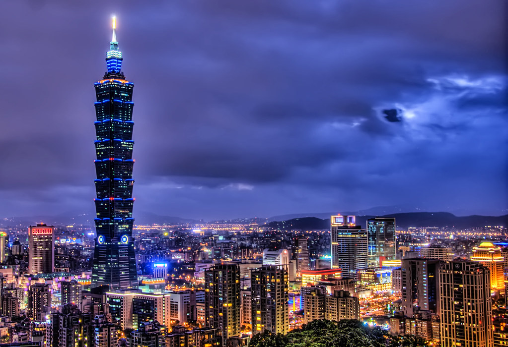

TAIPEI 1O1

The Tallest Building in Taiwan
Extremly Beautiful At Night
Background: Taipei 101 is a super high-rise skyscraper located in Taipei City, Taiwan, with a height of 509.2 meters,
101 floors above ground and 5 floors underground. Since its completion,
it has become one of the important landmarks and sightseeing spots in Taipei.
It is the tallest building in Taiwan and the only building with a height of more than 500 meters and more than 100 floors.
It once held the record of the tallest building in the world from December 1, 2004 to January 7, 2010 .